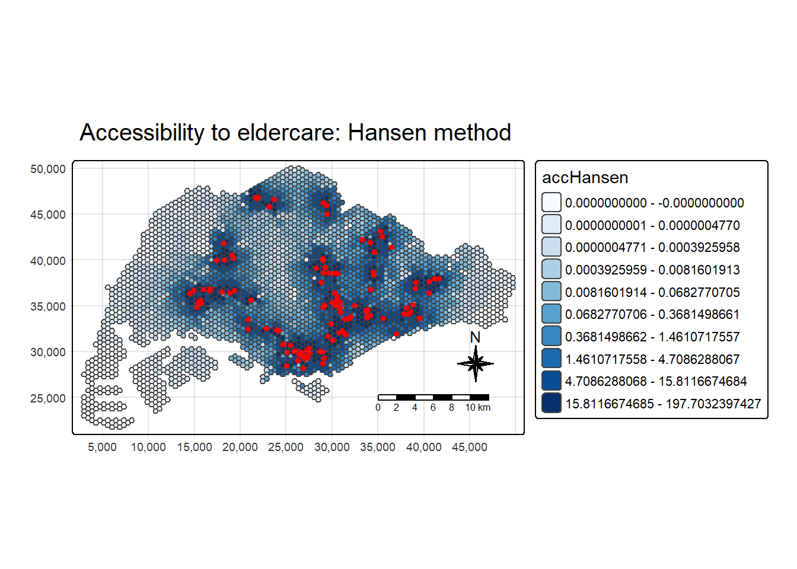
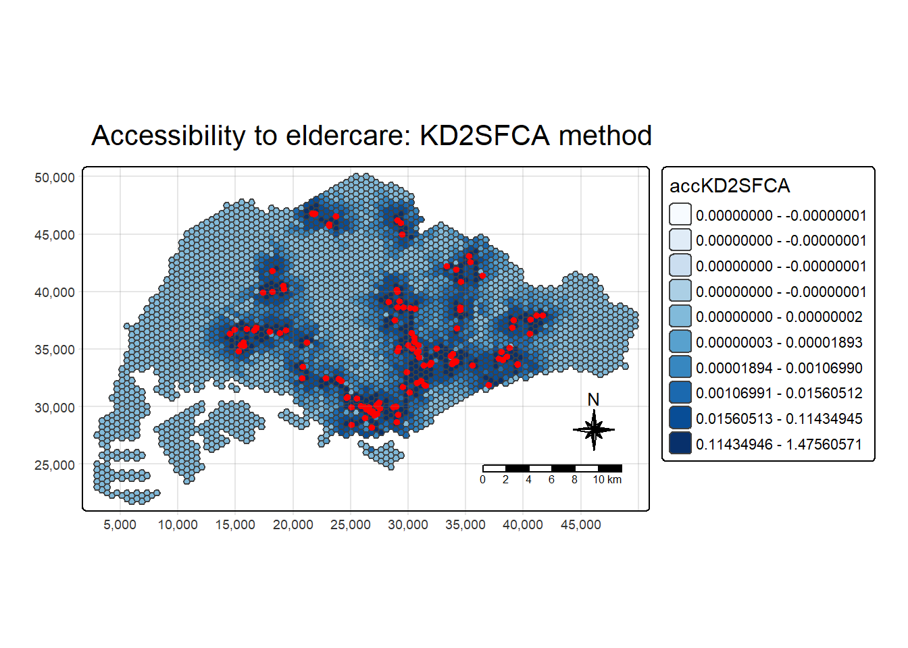
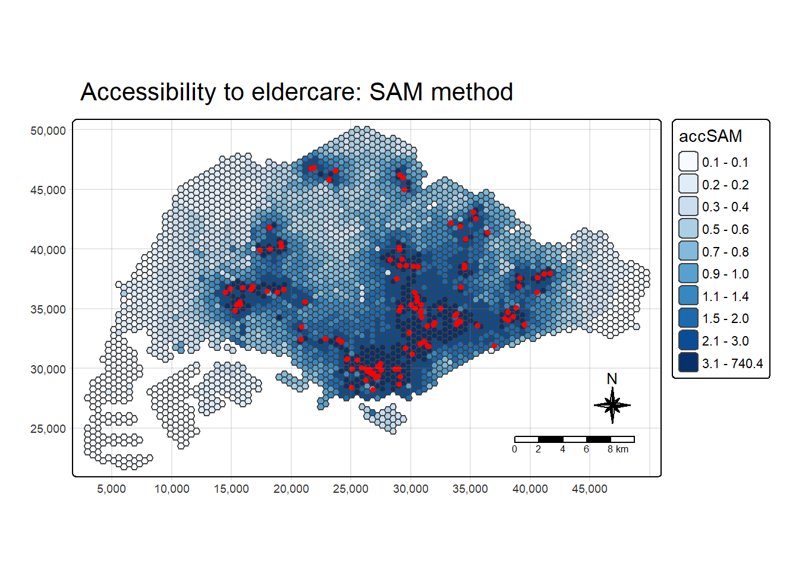
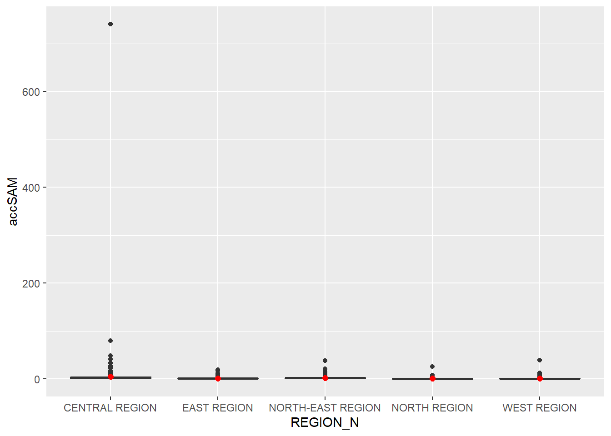

Code
pacman::p_load(tmap, SpatialAcc, sf,
ggstatsplot, reshape2,
tidyverse)The geography of accessibility measures how easily people can overcome distance and spatial barriers to reach important destinations like jobs, schools, healthcare, and shops. It moves beyond raw physical distance to evaluate how time, transport networks, cost, and individual constraints shape real-world
Questions that can be answered by accessibility models are:
Which part of the geographical areas are deprived from getting access to a social service, facility or job opportunity?
Which part of the geographical areas will be affected by a public policy or business decision such as merging JCs, secondary and primary schools.
In this hands-on exercise, we will model geographical accessibility by using R’s geospatial analysis packages.
Import GIS polygon data into R and save them as simple feature data frame by using appropriate functions of sf package of R;
Import aspatial data into R and save them as simple feature data frame by using appropriate functions of sf package of R;
Compute accessibility measure by using Hansen’s potential model and Spatial Accessibility Measure (SAM); and
Visualise the accessibility measures by using tmap and ggplot2 packages.
Four data sets will be used in this hands-on exercise, they are:
MP14_SUBZONE_NO_SEA_PL: URA Master Plan 2014 subzone boundary GIS data. This data set is downloaded from data.gov.sg.
hexagons: A 250m radius hexagons GIS data. This data set was created by using st_make_grid() of sf package. It is in ESRI shapefile format.
ELDERCARE: GIS data showing location of eldercare service. This data is downloaded from data.gov.sg. There are two versions. One in ESRI shapefile format. The other one in Google kml file format. For the purpose of this hands-on exercise, ESRI shapefile format is provided.
OD_Matrix: a distance matrix in csv format. There are six fields in the data file. They are:
All the values of the cost related fields are in metres.
Reminder: Except MP14_SUBZONE_NO_SEA_PL data set, the other three data sets are specially prepared by Prof. Kam for teaching and research purpose and can only be used for this hands-on exercise. Formal approval from Prof. Kam is required for use in other courses or purpose.
The R packages need for this exercise are as follows:
sf: Spatial data handling
spatialAcc: Modelling geographical accessibility
tidyverse: Attribute data handling
tmap: Thematic mapping
ggplot2: Statistical graphic
ggstatsplot: Statistical analysis
pacman::p_load(tmap, SpatialAcc, sf,
ggstatsplot, reshape2,
tidyverse)Note: Installing tidyverse will install readr, dplyr and ggplots packages as well as other R packages such as tidyr, stringr, forcats, tibble, purrr and magrittr.
Data Three geospatial sets data will be imported from the data/geospatial sub-folder using st_read() of sf packages.
mpsz <- st_read(dsn = "data/geospatial",
layer = "MP14_SUBZONE_NO_SEA_PL")Reading layer `MP14_SUBZONE_NO_SEA_PL' from data source
`C:\Users\chert\Desktop\cherteosg\ISSS626-GSA\Hands-on_Ex9\data\geospatial'
using driver `ESRI Shapefile'
Simple feature collection with 323 features and 15 fields
Geometry type: MULTIPOLYGON
Dimension: XY
Bounding box: xmin: 2667.538 ymin: 15748.72 xmax: 56396.44 ymax: 50256.33
Projected CRS: SVY21hexagons <- st_read(dsn = "data/geospatial",
layer = "hexagons") Reading layer `hexagons' from data source
`C:\Users\chert\Desktop\cherteosg\ISSS626-GSA\Hands-on_Ex9\data\geospatial'
using driver `ESRI Shapefile'
Simple feature collection with 3125 features and 6 fields
Geometry type: POLYGON
Dimension: XY
Bounding box: xmin: 2667.538 ymin: 21506.33 xmax: 50010.26 ymax: 50256.33
Projected CRS: SVY21 / Singapore TMeldercare <- st_read(dsn = "data/geospatial",
layer = "ELDERCARE") Reading layer `ELDERCARE' from data source
`C:\Users\chert\Desktop\cherteosg\ISSS626-GSA\Hands-on_Ex9\data\geospatial'
using driver `ESRI Shapefile'
Simple feature collection with 120 features and 19 fields
Geometry type: POINT
Dimension: XY
Bounding box: xmin: 14481.92 ymin: 28218.43 xmax: 41665.14 ymax: 46804.9
Projected CRS: SVY21 / Singapore TMUpdate mpsz to the correct ESPG code (i.e. 3414).
mpsz <- st_transform(mpsz, 3414)
eldercare <- st_transform(eldercare, 3414)
hexagons <- st_transform(hexagons, 3414)Verify the projection by using st_crs() of sf package.
st_crs(mpsz)Coordinate Reference System:
User input: EPSG:3414
wkt:
PROJCRS["SVY21 / Singapore TM",
BASEGEOGCRS["SVY21",
DATUM["SVY21",
ELLIPSOID["WGS 84",6378137,298.257223563,
LENGTHUNIT["metre",1]]],
PRIMEM["Greenwich",0,
ANGLEUNIT["degree",0.0174532925199433]],
ID["EPSG",4757]],
CONVERSION["Singapore Transverse Mercator",
METHOD["Transverse Mercator",
ID["EPSG",9807]],
PARAMETER["Latitude of natural origin",1.36666666666667,
ANGLEUNIT["degree",0.0174532925199433],
ID["EPSG",8801]],
PARAMETER["Longitude of natural origin",103.833333333333,
ANGLEUNIT["degree",0.0174532925199433],
ID["EPSG",8802]],
PARAMETER["Scale factor at natural origin",1,
SCALEUNIT["unity",1],
ID["EPSG",8805]],
PARAMETER["False easting",28001.642,
LENGTHUNIT["metre",1],
ID["EPSG",8806]],
PARAMETER["False northing",38744.572,
LENGTHUNIT["metre",1],
ID["EPSG",8807]]],
CS[Cartesian,2],
AXIS["northing (N)",north,
ORDER[1],
LENGTHUNIT["metre",1]],
AXIS["easting (E)",east,
ORDER[2],
LENGTHUNIT["metre",1]],
USAGE[
SCOPE["Cadastre, engineering survey, topographic mapping."],
AREA["Singapore - onshore and offshore."],
BBOX[1.13,103.59,1.47,104.07]],
ID["EPSG",3414]]Exclude redundant fields in the data tables of both eldercare and hexagons and create new fields (demand and capacity) using mutate() of dplyr package.
eldercare <- eldercare %>%
select(fid, ADDRESSPOS) %>% mutate(capacity = 100)
hexagons <- hexagons %>%
select(fid) %>% mutate(demand = 100)Note that for the purpose of this hands-on exercise, a constant value of 100 is used. In practice, actual demand of the hexagon and capacity of the eldercare centers should be used.
Import OD_Matrix.csv using read_cvs() of readr package. The imported object is a tibble data.frame called ODMatrix.
ODMatrix <- read_csv("data/aspatial/OD_Matrix.csv",
skip = 0)The imported OD Matrix is organised in a long format (‘thin’) where each row represents a trip from origin to destination.
However, modelling packages in R require a wide format (‘fat’) where rows are origins and columns are destinations.
spread() of tidyr package is used to transform the OD Matrix from a thin format into a fat format.
distmat <- ODMatrix %>%
select(origin_id, destination_id, total_cost) %>%
arrange(origin_id, destination_id) %>%
pivot_wider(names_from = destination_id,
values_from = total_cost) %>%
select(-origin_id) %>%
as.matrix()Currently, the distance is measured in meters because the SVY21 projected coordinate system is used. convert the unit of measurement from meters to kilometers.
distmat_km <- as.matrix(distmat/1000)Compute Hansen’s accessibility by using ac() of SpatialAcc package. data.frame() is used to save the output in a data frame called acc_Hansen.
acc_Hansen <- data.frame(ac(hexagons$demand,
eldercare$capacity,
distmat_km,
d0 = 50,
power = 2,
family = "Hansen"))Rename the default field name to ‘accHansen’.
colnames(acc_Hansen) <- "accHansen"Convert the data table into tibble format.
acc_Hansen <- as_tibble(acc_Hansen)Use bind_cols() of dplyr to join the acc_Hansen tibble data frame with the hexagons simple feature data frame.
hexagon_Hansen <- bind_cols(hexagons, acc_Hansen)Notice that hexagon_Hansen is a simple feature data frame and not a typical tibble data frame.
The above can be combined into a single code chunk if preferred.
Extract the extend of hexagons simple feature data frame by using st_bbox() of sf package.
mapex <- st_bbox(hexagons)Use the mapping functions in the tmap package to create a high-quality cartographic map of accessibility to eldercare centres in Singapore.
tm_shape(hexagon_Hansen,
bbox = mapex) +
tm_polygons(fill = "accHansen",
fill.scale = tm_scale_intervals(
style = "quantile",
n = 10,
values = "brewer.blues")) +
tm_shape(eldercare) +
tm_dots(size = 0.3,
fill = "red", col =
"black") +
tm_title("Accessibility to eldercare: Hansen method") +
tm_layout(frame = TRUE) +
tm_compass(type="8star", size = 2) +
tm_scalebar() +
tm_grid(alpha = 0.2)
Compare the distribution of Hansen’s accessibility values by URA Planning Region.
Add the planning region field into hexagon_Hansen simple feature data frame.
hexagon_Hansen <- st_join(hexagon_Hansen, mpsz,
join = st_intersects)ggplot() will be used to plot the distribution by using boxplot graphical method.
{r{} ggplot(data=hexagon_Hansen, aes(y = log(accHansen), x= REGION_N)) + geom_boxplot() + geom_point(stat="summary", fun.y="mean", c olour ="red", size=2)
Calculate KD2SFCA accessibility using ac() of SpatialAcc. data.frame() is used to save the output in a data frame called acc_KD2SFCA. Notice that “KD2SFCA” is used for the family argument.
acc_KD2SFCA <- data.frame(ac(hexagons$demand,
eldercare$capacity,
distmat_km,
d0 = 5,
power = 2,
family = "KD2SFCA"))
colnames(acc_KD2SFCA) <- "accKD2SFCA"
acc_KD2SFCA <- as_tibble(acc_KD2SFCA)
hexagon_KD2SFCA <- bind_cols(hexagons, acc_KD2SFCA)Create a high cartographic quality accessibility to eldercare centres in Singapore using a collection of mapping functions of tmap package. Notice that mapex is reused for bbox argument.
tm_shape(hexagon_KD2SFCA,
bbox = mapex) +
tm_polygons(fill = "accKD2SFCA",
fill.scale = tm_scale_intervals(
style = "quantile",
n = 10,
values = "brewer.blues")) +
tm_shape(eldercare) +
tm_dots(size = 0.3,
fill = "red",
col = "black") +
tm_title("Accessibility to eldercare: KD2SFCA method") +
tm_layout(frame = TRUE) +
tm_compass(type="8star", size = 2) + tm_scalebar() +
tm_grid(alpha = 0.2)
Compare the distribution of KD2CFA accessibility values by URA Planning Region.
Add the planning region field into hexagon_KD2SFCA simple feature data frame.
hexagon_KD2SFCA <- st_join(hexagon_KD2SFCA, mpsz,
join = st_intersects)ggplot() will be used to plot the distribution by using boxplot graphical method.
ggplot(data=hexagon_KD2SFCA,
aes(y = accKD2SFCA,
x= REGION_N)) +
geom_boxplot() +
geom_point(stat="summary",
fun.y="mean",
colour ="red",
size=2)
Calculate SAM accessibility using ac() from the SpatialAcc package, and save the output in a data frame called acc_SAM with data.frame(). Note that “SAM” is used for the family argument.
acc_SAM <- data.frame(ac(hexagons$demand,
eldercare$capacity,
distmat_km,
d0 = 5,
power = 2,
family = "SAM"))
colnames(acc_SAM) <- "accSAM"
acc_SAM <- as_tibble(acc_SAM)
hexagon_SAM <- bind_cols(hexagons, acc_SAM)Create a high cartographic quality accessibility to eldercare centres in Singapore using a collection of mapping functions of tmap package. Notice that mapex is reused for bbox argument.
tm_shape(hexagon_SAM,
bbox = mapex) +
tm_polygons(fill = "accSAM",
fill.scale = tm_scale_intervals(
style = "quantile",
n = 10,
values = "brewer.blues")) +
tm_shape(eldercare) +
tm_dots(size = 0.3,
fill = "red",
col = "black") +
tm_title("Accessibility to eldercare: SAM method") +
tm_layout(frame = TRUE) +
tm_compass(type="8star", size = 2) +
tm_scalebar() +
tm_grid(alpha = 0.2)
Compare the distribution of SAM accessibility values by URA Planning Region.
Add the planning region field into hexagon_SAM simple feature data frame.
hexagon_SAM <- st_join(hexagon_SAM, mpsz,
join = st_intersects)ggplot() will be used to plot the distribution by using boxplot graphical method.
ggplot(data=hexagon_SAM,
aes(y = accSAM,
x= REGION_N)) +
geom_boxplot() +
geom_point(stat="summary",
fun.y="mean",
colour ="red",
size=2)